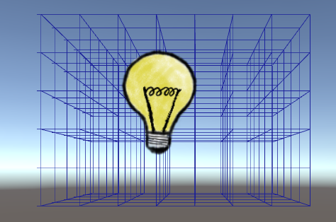

Mesh-based rendering
Category: progress
Tags: v3
The big one has landed: mesh-based rendering. This is the main reason for the major version bump and it is fully working now. Mesh-based rendering means that instead of drawing lines using the low-level GL class a mesh is generated which Unity can then render the same way it renders any other mesh. This means that grid lines can now be rendered below sprites instead of always on top of them.

How it works
The mesh-based rendering backend needs to be attached to a game object. It then queries the rendering system periodically for changes. Only when a change has occurred the mesh is re-computed. This helps us save processing power and keeps garbage low. Usually a mesh is made up of triangles, but in this case I use the lines topology, which lets us draw a mesh made up of line segments.
Ideally the backend would get notified automatically when a grid property has changed, but this is unfortunately not possible in Unity. Instead the backend asks the system every frame “Check if anything as changed”, then the rendering system does its stuff, and eventually it sends a notification back to the backend if there is something to be done. Currently the system is queried on every frame, but it would be easy to add a variable to only query on every n-th frame.
Drawbacks
All lines have the same colour and a width of one pixel. I could implement different colours per axis, but I do not think there is interest in such a feature when rendered in a running game (it is useful in the editor view though). As for the line width, I think this is better left to a 3rd party package like Vectrosity.
I prefer not to add everything and the kitchen sink, other people have already solved the problem of rendering lines much better. Grid Framework should come with rendering solutions which are good enough for the basic uses cases, and make it easy to integrate with other packages if users desire more features and control.
Next steps
I need to migrate Vectrosity support to the new system and maybe change how it is used. Ideally I would like to extract Vectrosity support to into its own package to download from the Asset Store (for free of course) so it does not bloat the rest of Grid Framework for those who do not need it. However, this will depend on whether the Asset Store allows uploading packages which have dependencies on a package which I do not own.